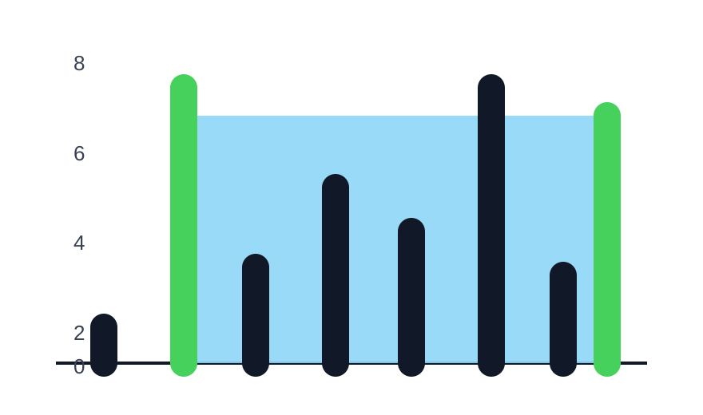

Use two edges, compute the area they trap, and always move the shorter wall inward.
Memory Game DraftMedium
Problem Statement
Solved
MediumTopicsCompany TagsHints
You are given an integer array heights where heights[i] represents the height of the ith bar.
You may choose any two bars to form a container. Return the maximum amount of water a container can store.
Example 1

Input:height = [1,7,2,5,4,7,3,6]
Output:36
Example 2
Input:height = [2,2,2]
Output:4
Python Solution
Two Pointers
Compute the area from both ends, keep the best answer, and move the shorter side because it is the only way the minimum height can improve.
Time: O(n)Space: O(1)
Q&A Mode
Why this solution works
from typing import List
class Solution:
def maxArea(self, heights: List[int]) -> int:
l, r = 0, len(heights) - 1
res = 0
while l < r:
area = min(heights[l], heights[r]) * (r - l)
res = max(res, area)
if heights[l] <= heights[r]:
l += 1
else:
r -= 1
return res
Practice Mode
Type the solution from memory
•Waiting for your first line
The function definition is already provided, just like LeetCode. Variable names you introduce don't have to match — just follow the same algorithm.
from typing import List
class Solution:
def maxArea(self, heights: List[int]) -> int: